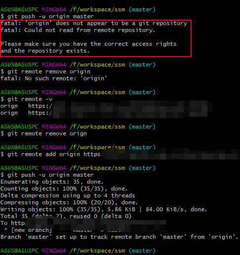

原文连接:https://www.cnblogs.com/xyfer1018/p/11493718.html
本文介绍使用Git初始化本地仓库，并首次提交代码到远程仓库GitLab上面。
首先，登录GitLab，创建一个新项目的私人仓库；

然后，在本地仓库（就是你写代码文件夹），右键，Git Bash Here，打开Git命令窗口；
在Git命令窗口输入 git init，初始化本地仓库，初始化完成后，本地仓库文件夹中会出现一个.git文件夹，证明该仓库 已经被git管理了；
按照如下步骤，添加远程仓库地址，并提交代码；
git add -A src： 把src文件夹提交到远程仓库；
git commit -m "首次提交代码，ssm整合"： 把代码提交到本地仓库，并备注信息；
git remote add origin 仓库地址： 设置远程仓库地址；
git push -u origin master： 提交代码到远程仓库，master分支；
获取远程仓库地址；
当提交代码时，可能出现如下错误：

说明你提交的仓库 origin不存在，我犯的错误是把origin单词拼写错误，导致前后输入命令时找不到该远程仓库，所以提交失败，可以使用使用以下命令解决该问题；
git remote -v： 查看远程仓库详细信息，可以看到仓库名称
git remote remove orign： 删除orign仓库（我把origin拼写成orign，删除错误名称仓库）
git remote add origin 仓库地址： 重新添加远程仓库地址
gti push -u origin master： 提交到远程仓库的master主干
按照如上步骤操作，即可完成本地仓库使用git初始化，并提交到远程仓库。